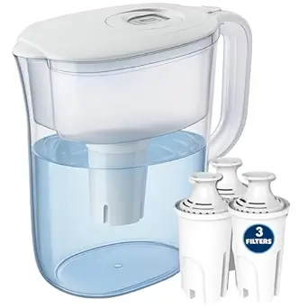
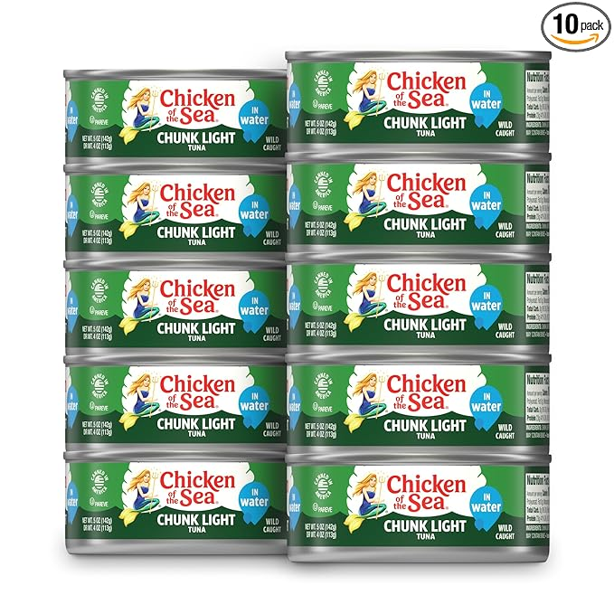

What I quit wasting money on—and what I use instead—since opening my eyes to the collapse.
When you wake up and realize the entire system is literally burning, your wallet starts making different decisions. I stopped prepping for the weekend and started prepping for the worst. And once I did, I saw how much money I was wasting on trash that would be completely useless to me in a single bad week.
The modern world wants you fat, distracted, and dependent with no attention span, so that you can no longer construct your own thoughts and ideas. But I made the switch. I quit impulse spending and started buying with a longer-term survival mindset. Dependable gear over Dopamine rush. Here are five things I no longer buy and what I use instead now that I’ve taken preparedness seriously.
I used to buy bottled water like it was going out of style. But it’s bulky, expensive, and useless when the taps run dry for real. Now I use the Brita Large Water Filter Pitcher in my kitchen, my shop, and anywhere clean water might become a luxury. We use it on a regular basis at my house. It filters out nasty taste and some contaminants (which is handy when your town is under a boil order), lasts months, and saves money fast. Every home should have one even if you’ve got bigger filters for SHTF.
You don’t need 100 one-gallon plastic jugs that split when bumped wrong. You need one good water carrier. I replaced jugs with the Coleman 5 Gallon Water Carrier. Thick Durable Plastic–Food Grade, UV-resistant, and stackable, this thing stores clean water like a champ. Whether I’m on the road, camping with the family, or topping off reserves, it’s a permanent part of my setup now. I keep several under my bed full of emergency water and several more in my garage.
üî• Check it out on AmazonUsed to be, a well stocked freezer was my backup plan. Until I realized a single power outage could wipe out a week‚Äôs worth of meals. So I still enjoy those things but I also pivoted to shelf-stable protein. Chicken of the Sea Chunk Light Tuna became a go-to. It‚Äôs clean, wild-caught, affordable, and ready to eat right out of the can. And you can include it to just about any recipe. I keep ten-packs in my pantry and stash a few in bug-out bags too. Tuna melts, cold tuna with mustard, or just fork-and-go. Protein never goes out of style.
Bottom line? Every dollar you spend should serve your survival. I stopped buying garbage. Now I stack what matters. Clean water, calories, long-term food, and gear that holds up when things fall apart. If you’re not prepping like it’s already happening, you’re already behind.